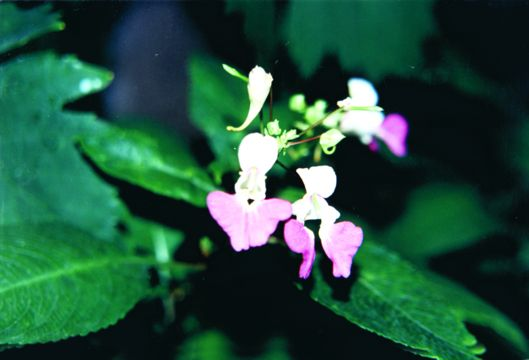
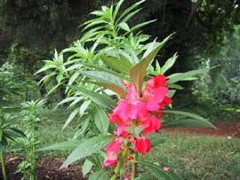

|
ECONOMICALLY
IMPORTANT PLANTS OF INDIA |
| Under-utilized Food and Fodder species and their wild relatives | Contributed by Ms.M.L Annapurna And Dr. Dhanapal, UAS, Bangalore |
Impatiens balsamina


A
very large genus of more or less succulent, annual or biennial herbs, rarely
becoming shrubby or epiphytic. They are chiefly natives of the mountainous
regions of tropical Asia and Africa but are also found in the north temperate
zone and in S.Africa. About 150 species occur in India. Many of them are endemic
and show restricted distribution in
A large number of Impatiens species have been acclimatised and grown in
gardens and green houses for their showy blossoms. They are mostly annuals
flowering in summer and are excellent for planting
in beds or along borders. Forms yielding double- flowers
(Camellia flowered)
or spotted or striped flowers have been evolved by breeding and
selection(Bailey, 1947, I, 442 ; II, 1642 ; Chittenden, I, 232).
Availability :
Status :
DIAGNOSTIC
FEATURES
An erect, branched succulent annual with shortly
stalked or stalkless, alternate,
lanceolate, serrate leaves ;
flowers solitary or fascicled, purple, pink or nearly white, with long, slender,
incurved spurs; fruits capsular, hairy ; seeds globose, tubercled, about 0.5 cm.
in diameter. They flower profusely and capsular fruits, when ripe, dehisce
explosively and shatter the seeds
REPRODUCTIVE BIOLOGY
:
flowers
solitary or fascicled, purple, pink or nearly white, with long, slender,
incurved spurs; fruits capsular, hairy ; seeds globose, tubercled, about 0.5 cm.
in diameter.
Breeding System :
Phenology :
They are mostly annuals
flowering in summer
Pollinators:
Seed Biology :
Seed
Germination :
Seed
propagation. Seeds germinate
readily ; seedlings are raised in nurseries or in boxes and transplanted in
prepared beds. Biennial and perennial forms may be propagated from cuttings. To
obtain best results, side branches are pinched out so that large blooms appear
on the main axis (Firminger, 596 ; Gopalaswamiengar, 439; Burns & Da vis, 26
; Bailey, 1947, I, 442 ; II, 1642 ; Chittenden, II,
1047).
The
best sowing time in the plains of N. India is June-July, about the commencement
of the monsoon, while on the hills, they can be sown by the end of March; in S.
India, they can be grown nearly throughout the year.
Cultivation : Major Pests and Diseases:
Pests:
Diseases:
Parts used:
Leaves,
flowers, Seeds.
Harvesting Practices
Produce and Products
:
oil
The
oil may be used for cooking and for burning in lamps ; it is also suitable for
use in the surface-coating industry
(Sarkar & Chakrabarty, Sci. 6- Cult., 1955-56,
21, 6i6; Chem. Abstr., 1942, 36,
7337 ; '954. 48, 13835).
The deep red flowers contain a monoglycosidic anthocyanin based on
pelargonidin, whereas the roots and stems contain cyanidin monoglycoside (Sharma
& Seshadri, . sci. industr. Res., 1955, 14B, 2ii).
Alcoholic
extracts of the flowers possess marked antibiotic
activity
against
Sclerotinia
fructicola, Colletotrichum lindemiithianum and other pathogenic fungi and
bacteria. The active principle has been
identified
as 2-methoxy-l,
4-naphthoquinonen(Little et al., J. biol. •Chem., 1948, 174, 335).
Little et al., J. biol. •Chem., 1948, 174, 335.